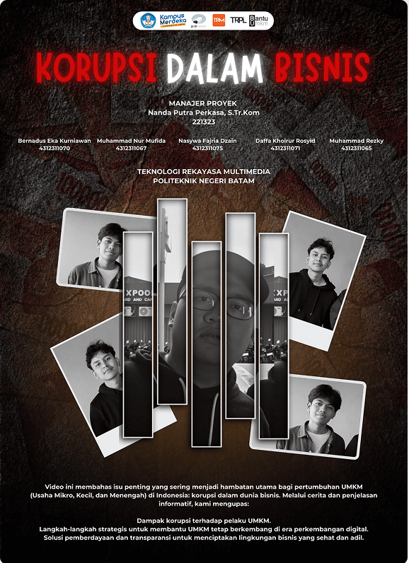
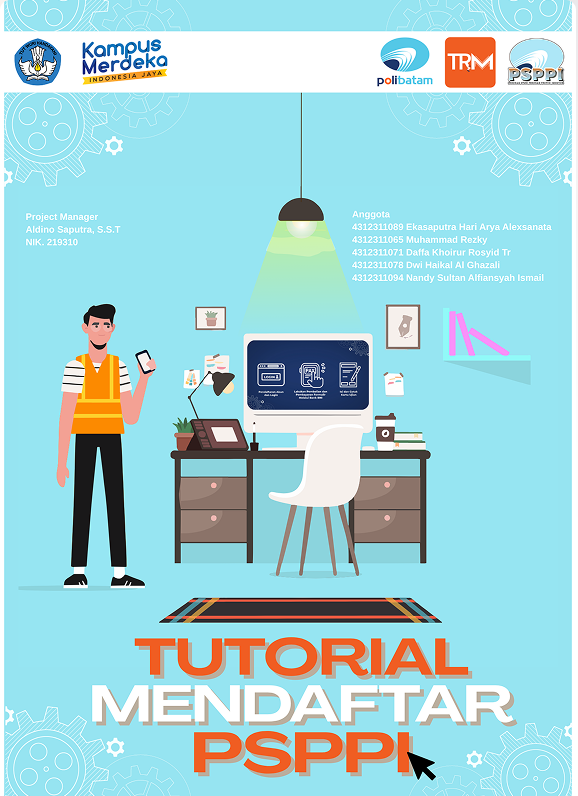
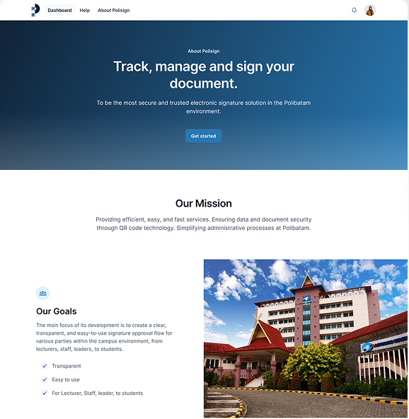

Graphic Designer / UI/UX Designer
About meProjects
Introductory video for the BANTU UMKM app
In this project, I served as a video editor, supporting actor, and actor. My primary focus was video editing and color grading to create consistent and engaging visuals. I also participated in scenes to support the app's promotional message.
▶ Watch here
Projects
Motion Graphic Design "PSPPI Application Registration Tutorial"
In this project, I was involved in the motion graphics editing process and the creation of visual assets used in the tutorial video. The scope of work included graphic element design, text animation, and visual processing to ensure the PSPPI application registration information was conveyed clearly, engagingly, and easily understood.
▶ Watch here
Projects
Branding Polibatam TTE QR sign
In this Polibatam QRSign Visual Branding project, my focus of the work is on designing the application's visual identity, specifically the logo and the website's UI/UX design. The design was created for both mobile and desktop versions with a consistent, simple, and user-friendly approach, to support a modern, secure, and efficient TTe administration process within Polibatam.
🌐 See Project